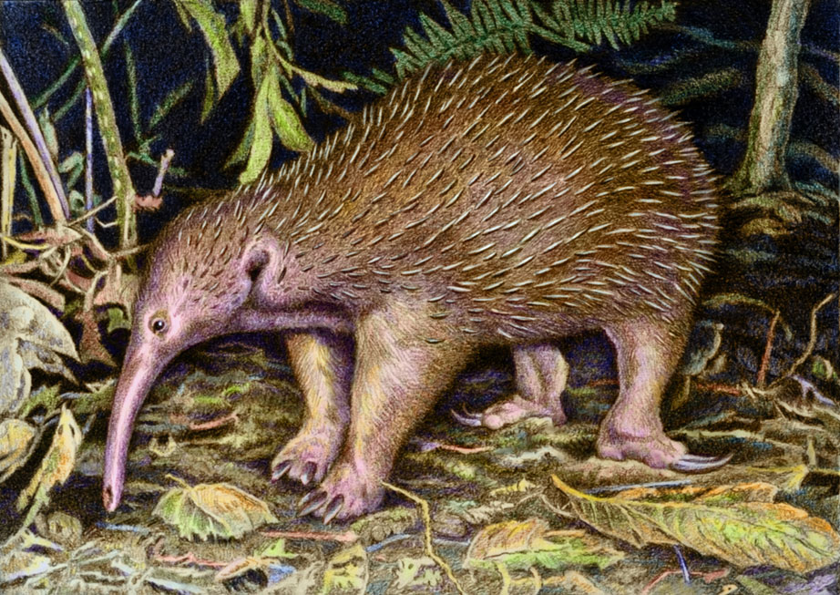

About the Long Beaked Echidna
This is the coolest animal you have never heard of. Echidnas give us a view of the earliest mammals on Earth. There are three species of Long Beaked Echidna and they all live in Papua New Guinea
Naturalist drawing of a Long Beaked Echidna
Long Beaked Echidna Characteristics
- Have spines like a hedgehog
- Do not have teats like most mammals, they secrete milk through their skin
- Lay eggs into a pouch and carry young like a kangaroo after hatching
- Have a cloaca for urine, feces, and reproduction
Similar Animals
Long Beaked Echidnas are closely related to Short Beaked Echidnas which are common in Australia and Papua New Guinea. Short Beaked Echidnas have been studied far more then their long beaked cousins. Their next closest relation is the Platypus, the only other egg laying mammal alive today. Click on the links below to learn more: